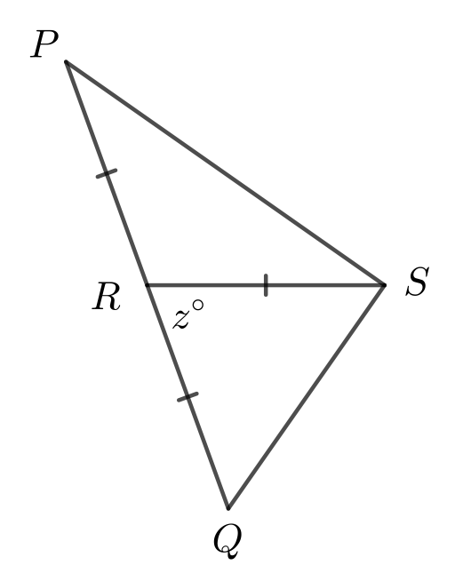
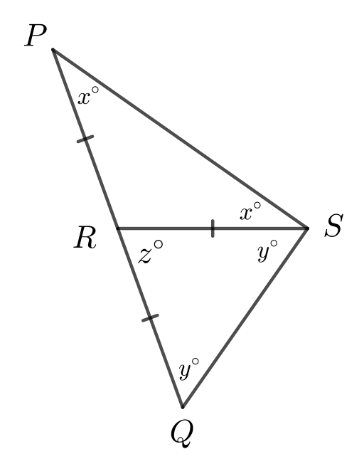

Problem of the Week
Problem D and Solution
Angled II
Problem
In \(\triangle PQS\), \(R\) lies on \(PQ\) such that \(PR=RQ=RS\) and \(\angle QRS =z^{\circ}\).
Determine the measure of \(\angle PSQ\).

Solution
Solution 1
In \(\triangle PRS\), since \(PR=RS\), \(\triangle PRS\) is isosceles and \(\angle RPS=\angle RSP=x^{\circ}\).
Similarly, in \(\triangle QRS\), since \(RQ=RS\), \(\triangle QRS\) is isosceles and \(\angle RQS=\angle RSQ=y^{\circ}\).

Since \(PRQ\) is a straight line, \(\angle PRS + \angle QRS=180^{\circ}\). Since \(\angle QRS =z^{\circ}\), we have \(\angle PRS =180 - z^{\circ}\).
The angles in a triangle sum to \(180^{\circ}\), so in \(\triangle PRS\) \[\begin{aligned}
\angle RPS +\angle RSP + \angle PRS&=180^{\circ}\\[-1mm]
x^{\circ} + x^{\circ} + 180 - z^{\circ}&=180^{\circ}\\[-1mm]
2x&=z\\[0mm]
x&=\frac{z}{2}\\[-10mm]\end{aligned}\]
The angles in a triangle sum to \(180^{\circ}\), so in \(\triangle QRS\) \[\begin{aligned} \angle RQS +\angle RSQ + \angle QRS&=180^{\circ}\\[-1mm] y^{\circ} + y^{\circ} + z^{\circ}&=180^{\circ}\\[-1mm] 2y&=180-z\\[-1mm] y&= \frac{180-z}{2} \\[-6mm]\end{aligned}\]
Then \(\angle PSQ=\angle RSP + \angle RSQ=x^{\circ}+y^{\circ}=\frac{z}{2}^{\circ}+\left( \frac{180-z}{2} \right)^{\circ}=\left(\frac{180}{2}\right)^{\circ}=90^{\circ}\).
Therefore, the measure of \(\angle PSQ\) is \(90^{\circ}\).
See Solution 2 for a more general approach to the solution of this problem.
It turns out that it is not necessary to determine expressions for \(x\) and \(y\) in terms of \(z\) to solve this problem.
Solution 2
In \(\triangle PRS\), since \(PR=RS\), \(\triangle PRS\) is isosceles and \(\angle RPS=\angle RSP=x^{\circ}\).
Similarly, in \(\triangle QRS\), since \(RQ=RS\), \(\triangle QRS\) is isosceles and \(\angle RQS=\angle RSQ=y^{\circ}\).
The angles in a triangle sum to \(180^{\circ}\), so in \(\triangle PQS\) \[\begin{aligned}
\angle QPS +\angle PSQ + \angle PQS&=180^{\circ}\\
x^{\circ} + (x^{\circ}+y^{\circ}) + y^{\circ}&=180^{\circ}\\
(x^{\circ}+ y^{\circ}) + (x^{\circ}+y^{\circ}) &=180^{\circ}\\
2(x^{\circ}+y^{\circ})&=180^{\circ}\\
x^{\circ}+y^{\circ}&=90^{\circ}\\[-8mm]\end{aligned}\] But \(\angle PSQ=\angle RSP + \angle RSQ=x^{\circ}+y^{\circ}=90^{\circ}\).
Therefore, the measure of \(\angle PSQ\) is \(90^{\circ}\).